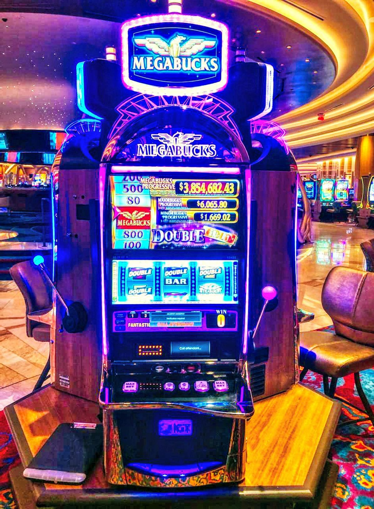
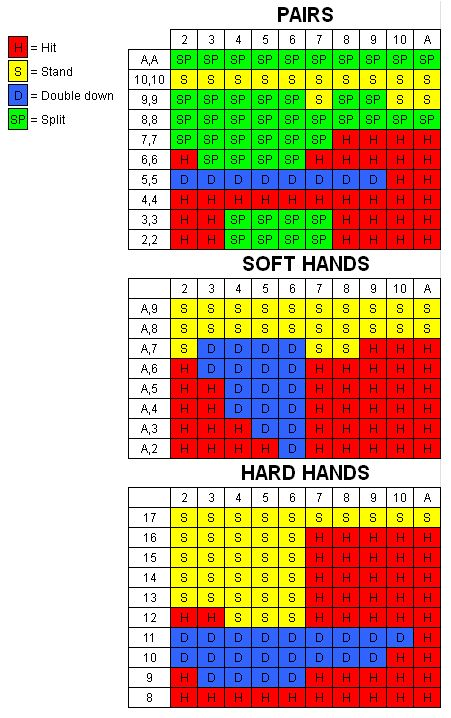

Slot Machines
The most noticable games in the casino are the slot machines. They are colorful, noisy, and easy to play. You simply put your money in and push a button, THATS IT! Sounds easy right? Well, the slot machines are one of the worst games if you're looking to make money. Slots are literally rigged! Yes, you will win some, however, you will lose a lot more. The reason slots are one of the most played games is that they are inviting and easy to play. Anyone can play a slot machine, but not everyone can play poker. The house edge on slots can be up to 15%! That means on average 15% of all the money you put into the slot machine will be lost. So if you played $1,000 you would come out with $850.
BlackJack
Blackjack is another popular game in casinos. However, compared to slots, it's a lot better profit wise. Blackjack can be treated as a game of chance, but there are ways to turn it into a game of skill. Card counting is a great method to increase profit. Do not be fooled though, counting cards is not only very difficult to do, but also can get you banned from many casinos. However, there is an alternative. Blackjack basic strategy! The basic strategy is actually really easy to learn, but it will not increase your profitability as much as card counting. Below is a chart of basic strategy. This allows you to lose less often, and to give yourself the best chance of winning mathematically without counting the cards. With basic strategy the average house edge is around 2%.
Want to learn more about card counting?
- Wired: Card Counting
- Steven Bridges' YouTube channel
- Movie: 21 (2008) – Available On Prime Video & Hulu
- MIT students card counting documentary